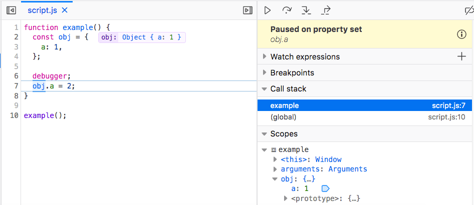

When debugging JavaScript code, it can be useful to know when properties on objects are read or modified. In a large, complex codebase, it's not always easy to know where in the code a given property is accessed. In the Firefox Debugger, this information can be provided by watchpoints. By setting a watchpoint on the property, rather than a breakpoint at a particular line, you can discover where that access occurs.
There are three types of watchpoints: get, set, and get or set. A get watchpoint pauses whenever a property is read; a set watchpoint pauses whenever a property value changes; a get or set watchpoint pauses whenever a property value is accessed in either way.
When the watched property is accessed in the way specified by the watchpoint type (get or set), the debugger pauses, enabling you to see line of code responsible, and to inspect anything else you wish at that time.
In the following screenshot, the debugger pauses at line 7, where obj.a is set. The message panel in the upper right corner indicates that the debugger is "Paused on property set".
